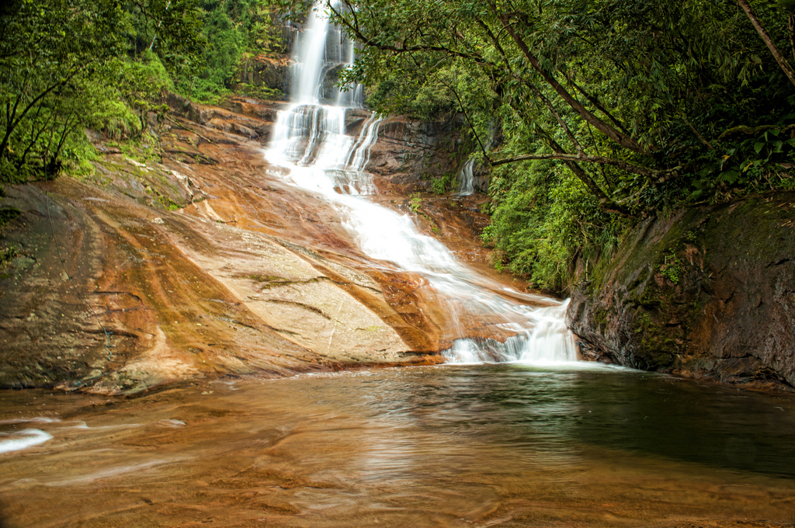
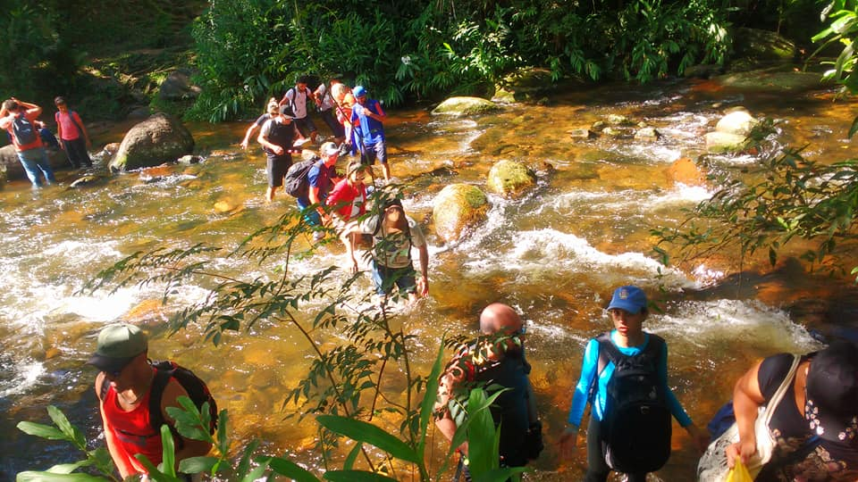
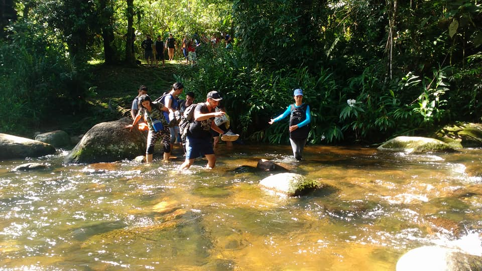
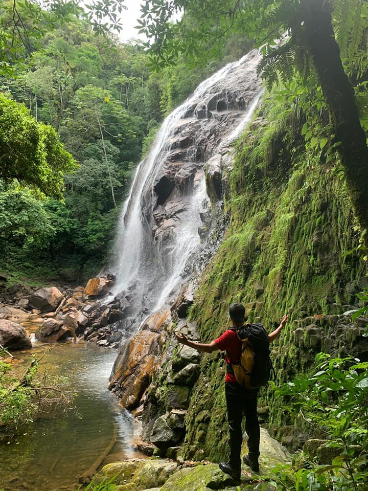
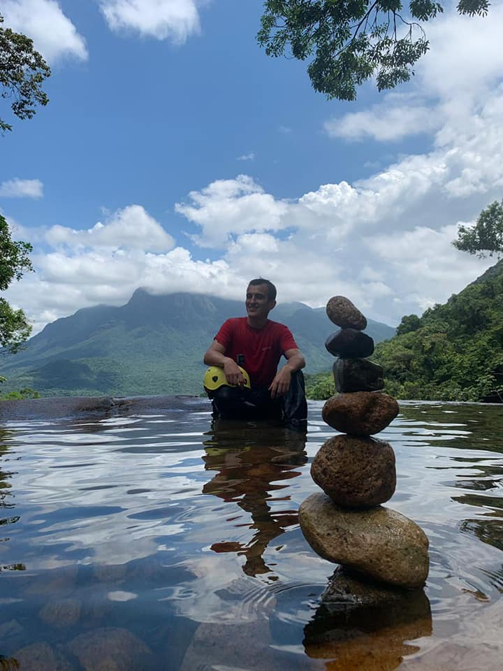
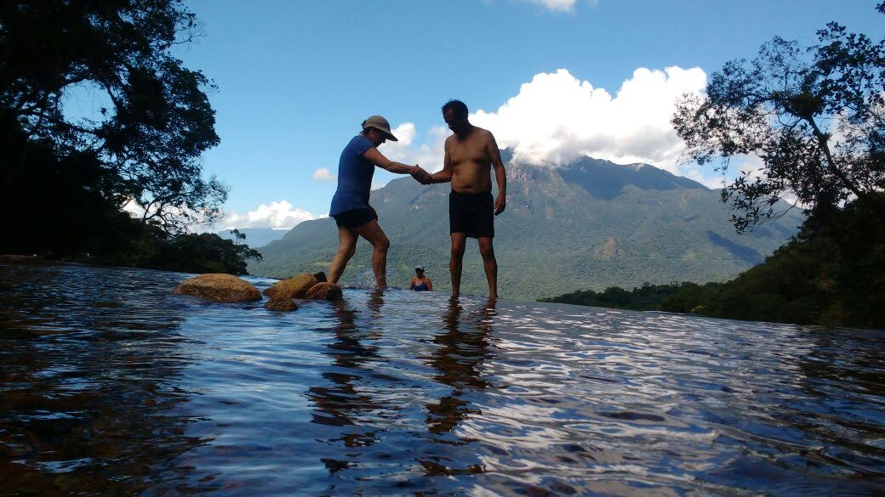
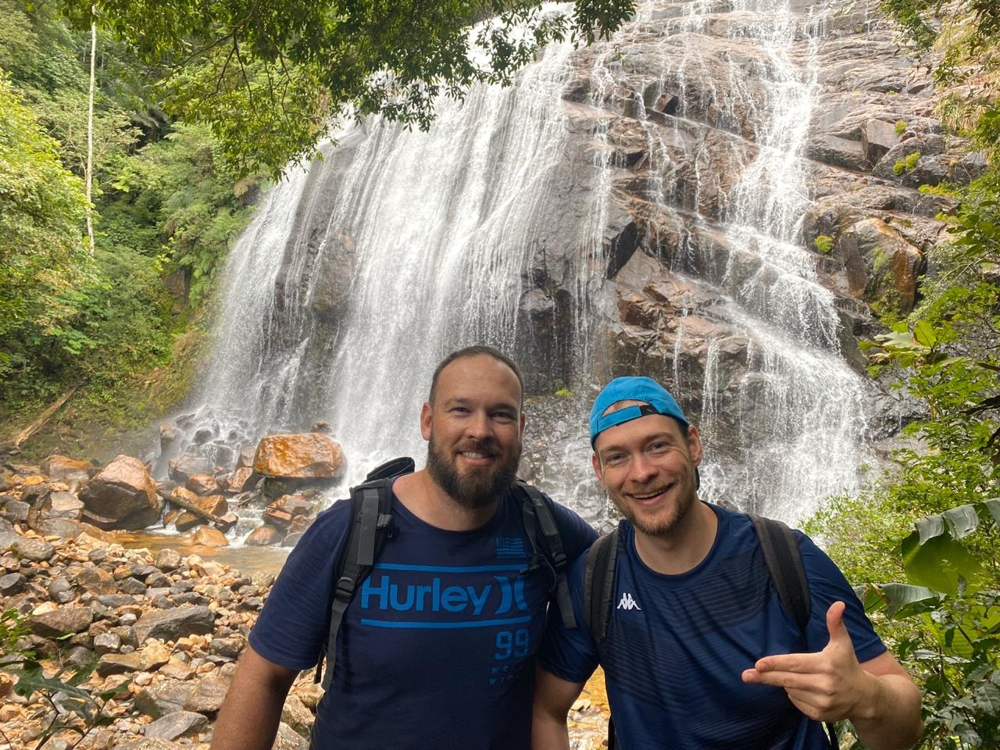

Detalhes do Roteiro
Situado no pacato e histórico município de Morretes e encravado entre os santuários naturais da Serra do Mar, o Salto dos Macacos é imponente e encantador. Propício para os amantes da natureza, a trilha para nele chegar é verdadeiro desafio, exigindo esforço, dedicação e superação. A recompensa para os aventureiros é um ambiente digno de aplausos, excelente para admirar e interagir com cachoeiras de piscinas naturais. A experiência é singular e fascinante. Deixe vir à tona a adrenalina e se aventure com a PARANÁ ECOTURISMO nessa porção da Mata Atlântica paranaense.
Atrações:
Salto dos Macacos (70 mts), Salto Redondo (40 mts), piscinas naturais, seu acesso é realizado por trilha fechada em meio a Mata Atlântica, figueira centenária, havendo a possibilidade para a observação de fauna e flora, cruzando vários rios, até se alcançar as duas cachoeiras.
Serviços incluído:
Translado in/out privativo, saindo de Morretes ou Curitiba;
Informações importantes
- Duração da atividade: 1 dia;
- Horário: 07h00min da manhã;
- Localização - Parque Estadual do Marumbi;
- Distância - 10 km, do centro de Morretes até o início da trilha;
- Nível de Dificuldade - Moderado/Pesado.
- Trilha de aproximadamente 7 km (ida e volta);
- Usar: Tênis fechado ou bota de trilha, roupas leves e confortáveis.
Tarifas
| N° de pessoas | Guia bilíngue | Adulto | Criança |
|---|---|---|---|
| 2 a 6 | Não | R$ 200.00 | R$ 130.00 |
| 2 a 6 | Sim | R$ 275.00 | R$ 190.00 |
Galeria de Fotos






